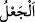
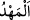
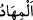

Fethu’r-Rahmân’da şöyle denilmektedir: Kureyş’in cevâbının gereği “onları, yani
gökleri ve yeri Allah yarattı” demeleridir. Fakat Allah’tan bahsedilince artık mânâ daha
bir yücelerek O’nun azîz ve alîm yani çok üstün ve çok bilen olduğu da zikredilmiştir.
Zîrâ bu durum, bundan sonra Allah’a dâir bir takım sıfatların serdedilmesine bir
hazırlık mâhiyetindedir. Nitekim bunun akabinde Yüce Allah söze bu sıfatlarla başlamış
ve bu sıfatları, mânâsı Kureyş’ten hikâye edilen sözlerin aynı olarak beyan etmiştir. İşte
bu da “ellezî: öyle Allah ki” diye başlayan bir sonraki âyettir.
Âyette şuna işâret edilmektedir: Mârifetullah yani irfân yoluyla Allah’ı bilme, insanın
fıtrat, cibilliyet ve yaratılışına konulmuştur. Bunun îzâhı şudur: Allah Teâlâ
Ademoğullarından onların bellerinden zürriyetlerini çıkarıp almış “Ben sizin Rabbiniz
değil miyim?” (el-A’raf, 7/172) hitabıyla onları kendilerine şâhid tutmuş, hitabını
onlara duyurmuş, Rab oluşunu onlara tanıtmış, kendisine icâbet etmeye onları muvaffak
kılmıştır. Onlar da bu soruya “Evet” karşılığını vermişlerdir. Artık bu ikrâr, bu âlemde
Allah’ın yaratıcı oluşunu ikrâr etmelerinin semeresinin bir tohumu ve çekirdeği
olmuştur. Fakat Allah Teâlâ izzet duvarlarını aşıp, kendi zâtına ulaşmaya ancak inâyet
cezbeleriyle azîz kıldığı kullarını muvaffak kılar. O öyle her şeyi iyi bilen bir zattır ki,
mesajını koyacağı yeri (elçilik görevini kime vereceğini) bilir.
Şâirin ifâdesiyle:
İsm-i âzam kendi işini görür ey gönül sen hoş ol.
Hîle ve desîse ile şeytan iyi/Müslüman olmaz.
10. O, size yeri beşik kılmış ve doğru gidesiniz diye yeryüzünde size yollar
yaratmıştır.
“O, size” oturduğunuz, yatıp uyuduğunuz, sizden birinizin yatak ve beşiğinde dönüp
durduğu gibi dönüp durduğunuz “yeri beşik kılmış ve” din ve dünya işlerinizi takip için
çıkacağınız sefer ve seyahatlerde “doğru gidesiniz” ve maksadlarınıza ulaşasınız “diye
yeryüzünde size yollar yaratmıştır.”
Bu ifâde, Allah tarafından müstakil bir hüküm hâlinde ortaya konulmuş olup akla
gelebilecek bir takım sorulara cevap teşkil etmektedir. “/ca’l” bir şeyi bir hâlden
diğer hâle intikal ettirmektir. “/mehd” ve “/mihâd” ise hazırlanıp döşenen yer
anlamındadır. Allah Teâlâ şöyle buyuruyor: “O (Rabb) ki yeri, sizin için döşek…
yaptı” (el-Bakara, 2/22) Yani yeri sizin için yayıp döşedi. Orada karar kılıp
yerleşmenize arz etti. Orada yerleşesiniz, mesken tutasınız diye yeryüzünü sizin için
yayıp döşedi.